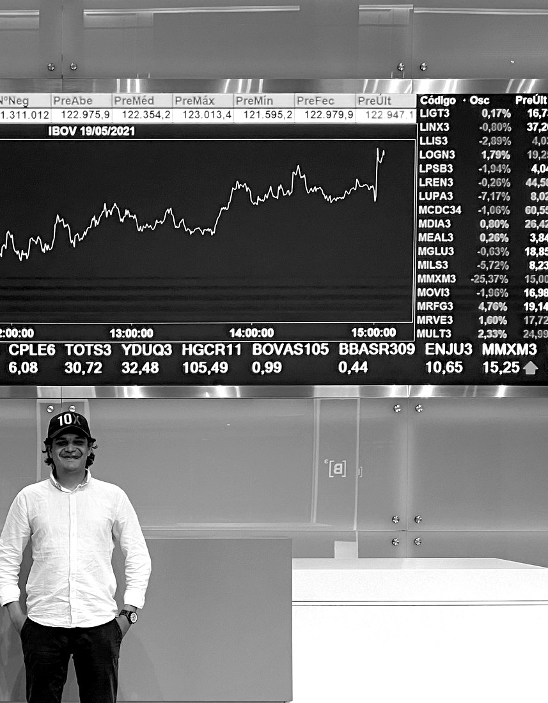

From the Greek stochastēs — one who conjectures with skill. Independent, concise analysis of global markets: equities, commodities and digital assets.

If you manage a fund or portfolio and would like independent, direct market views — or a second opinion on your current positioning — I am available for advisory engagements and bespoke research.
juancarlosbaya@protonmail.com